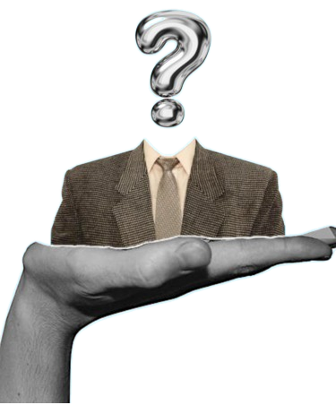

A ciência por trás: Como o nosso cerébro reage a isso?
Se você esteve online nos últimos anos com certeza em algum momento acabou se
deparando com uma certa palavra; Dopamina, e diversas pessoas alertando
sobre ela, mas espera aí, o que seria isso? E o que esse nome tem haver
com o funcionamento do nosso cerébro no nosso dia a dia?

Antes do início da década, o tempo ideal de uso de telas já era algo muito discutido. Porém, com a pandemia do Coronavírus em 2020, houve um aumento considerável do uso de telas, graças a fatores como o “lockdown”. Eventualmente, tópicos abordando os malefícios de passar tanto tempo expostos a telas surgiram, e se tornaram bastante populares nos tempos atuais. Com novos tópicos, surgem palavras desconhecidas, por exemplo, o que seriam “neurotransmissores?”
Neurotransmissores
Neurotransmissores são substâncias químicas produzidas pelos nossos neurônios, que servem para passar sinais entre as células e permitir que diversas coordenações e funções corporais aconteçam.

Dentre esses, temos alguns muito conhecidos, como a Adrenalina*, Endorfina e Ocitocina, e claro; A Dopamina
Este neurotransmissor é produzido pelo nosso cérebro no nosso "circuito de recompensa" (ou sistema mesolímbico, nos termos técnicos), ele atua no humor, aprendizado, motivação, prazer, dentre outras coisas
Liberamos dopamina sempre que algo que o nosso cérebro interpreta como prazeroso acontece; comer algo que você goste, exercícios físicos, e é aí que o uso de telas entra na história.

O nosso cérebro rapidamente aprende quais são as atividades que nos dão mais dessa substância,
As redes sociais foram pensadas e projetadas com base em estudos sobre psicologia comportamental, com a intenção de que o usuário sinta prazer ao usar e fique imerso por horas na tela.
E assim, mais uma peça entra: Os Esquemas de Reforço! Com base nos estudos do especialista em comportamento Burrhus F. Skinner. Esse esquema ensina o nosso cérebro pelo o que vai acontecer depois da ação. Então se a consequência da ação for algo "positivo", essa ação será classificada como boa e terá um estímulo positivo para que ela aconteça de novo no futuro. Se a ação for classificada como "negativa", aí o inverso acontece; graças a um estímulo negativo o nosso cérebro entende que não devemos repetir a ação, e busca evitar.

Curtir, atualizar o feed, comentar, são reforços positivos que fazemos constantemente; “Esses elementos são chamados de reforçadores de razão variável, porque nunca se sabe quando ou em que quantidade essa recompensa virá, como se fosse em uma máquina caça-níquel. Por meio dos esquemas de reforçamento, gradualmente o usuário das redes sociais passa a agir como um apostador: toda vez que olha para o celular, sente vontade de checar seus perfis para ver se há algum prêmio reservado para ele” , afirma o artigo da UFSM

Quando tudo isso acontece, há liberação de dopamina. Tudo isso devido ao pouco esforço que essa atividade exige. Pergunte a si mesmo, o que é mais fácil para você: Sair de casa para fazer atividades físicas ou ficar rolando o feed do Instagram?
O grande problema aparece agora: Os estímulos fáceis fazem o nosso cérebro para de produzir o neurotransmissor nas quantidades habituais, dessa forma, precisamos de cada vez mais tempo de tela para nos sentirmos "saciados"
afirma psicóloga Anna King. Ao explicar a diferença entre os tipos de dependência do meio digital, a profissional esclarece que muitos tem dependência digital no sentido de necessitar de tecnologia no dia a dia, para estudos, trabalhos
Em contramão, existe a dependência patológica (ou nomofobia), normalmente atrelada a transtornos psicológicos, essa dependência vai além de só passar tempo de mais nas telas. Pessoas que sofrem de nomofobia buscam, principalmente, escapar da sua realidade através das telas
Portanto, é essencial ter em mente que os problemas de um alto tempo de exposição a telas vai muito além de só procrastinação, afeta nosso cerébro de uma forma profunda. Porém, tomando cuidado, é possível se preservar e não caair na febre da “Dopamina rápida”.
Referências
UFSM - "Como redes sociais hackeiam sua mente” https://www.ufsm.br/midias/arco/como-redes-sociais-hackeiam-sua-mente NATIONAL GEOGRAPHIC BR - "Como o uso excessivo das telas afeta o cérebro | National Geographic" https://www.nationalgeographicbrasil.com/ciencia/2023/02/como-o-uso-excessivo-das-telas-afeta-o-cerebro